保护视图防止未登录的用户访问，以及在视图和表单中访问已经登录的用户，我们还将实现主题列表和回复列表视图，最后将探索 Django ORM 的一些特性 和数据迁移的简单介绍。
保护视图 我们必须保护视图防止那些未认证（登录）的用户访问，下面是发起一个新话题的页面。
我们在 view 视图中添加一个视图装饰器来避免它被未登录的用户访问，如果新建 Topic 的话就会被重定向到登录页面
1 2 3 4 5 6 7 8 boards/views.py from django.contrib.auth.decorators import login_required # 避免它被未登录的用户访问 @login_required # 新建 topic 的函数 def new_topic(request,pk): # ...
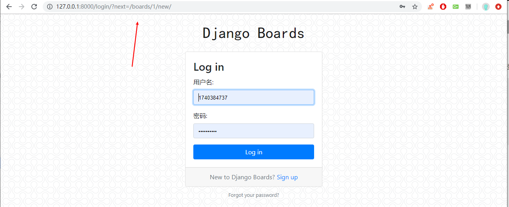
配置登录后的重定向地址 1 2 3 4 5 6 7 8 templates/login.html <form method="post" novalidate> {% csrf_token %} <input type="hidden" name="next" value="{{ next }}" > {% include 'includes/form.html' %} <button type="submit" class="btn btn-primary btn-block">Log in</button> </form>
现在尝试登录，登录成功后，应用程序就会跳转到原来的位置，next 也是内置功能的一部分。有关 next 的具体应用可以参考 Django 注册登录功能-跳转功能
已登录用户发言 现在我们可以改进之前的 new_topic 视图，将发布主题的用户设置为当前登录的用户，取代之前直接从数据库查询出来的第一个用户，之前这份代码是临时的，因为那时候还没有方法去获取登录用户，但是现在可以了：
1 2 3 4 5 6 7 8 9 10 11 12 13 14 15 16 17 18 19 20 21 22 23 24 25 26 27 28 29 30 31 32 33 boards/views.py from .forms import NewTopicFormfrom django.contrib.auth.decorators import login_required@login_required def new_topic (request,pk) : board = get_object_or_404(Board,pk=pk) if request.method =='POST' : form = NewTopicForm(request.POST) if form.is_valid(): topic = form.save(commit=False ) topic.board=board topic.starter = request.user topic.save() post = Post.objects.create( message = form.cleaned_data.get('message' ), topic = topic, created_by=request.user ) return redirect('board_topics2' ,pk=board.pk) else : form = NewTopicForm() return render(request,'new_topic.html' ,{'board' :board,'form' :form})
我们添加一个新的主题快速验证一下：
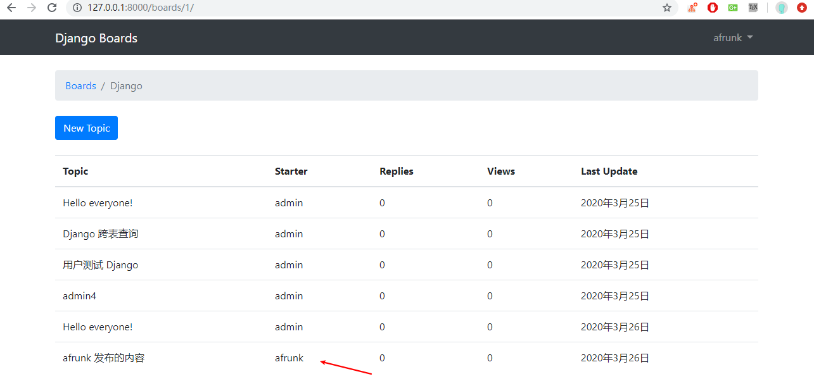
主题回复列表 路由跳转 现在我们花点时间来实现主题的回复列表页面，先来看一下线框图
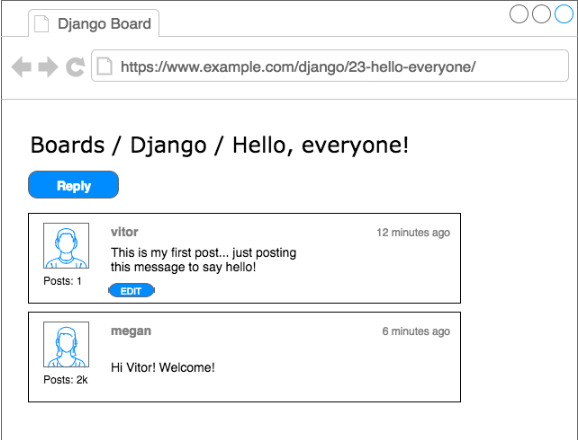
首先我们需要写 URL 路由
1 2 3 4 myproject/urls.py # 回复列表路由 path('boards/<int:pk>/topics/<int:topic_pk>/',views.topic_posts,name='topic_posts')
有两个关键字参数，pk 用于唯一标识版块 Board，topic_pk 用于唯一标识该回复来自哪个主题。将这2个数传入给视图函数，视图函数查询数据库数据，然后将数据模型返回给前端页面
1 2 3 4 5 6 7 boards/views.py def topic_posts (request,pk,topic_pk) : topic = get_object_or_404(Topic,board__pk=pk,pk=topic_pk) return render(request,'topic_posts.html' ,{'topic' :topic})
这些和我们之前的在 服务器如何获取数据 中提到了类似的方法。
但是需要注意，这里视图函数传给前端的是 Topic Model ,所以我们在前端中想要查询 board Model 的信息的话就需要使用 topic.board.name 的外键访问形式来进行。在上面的文章中，传给前端的是 board Model ，如果要访问 Topic Model 的信息使用的就是 for topic in board.topics.all。 这就是外键的反向链接，再比如我们要访问 post Model 中的内容，也可以使用外键来访问
1 2 3 4 5 6 7 8 9 10 11 12 13 14 15 16 templates/topic_posts.html {% extends 'base.html' %} {% block title %}{{ topic.subject }}{% endblock %} {% block breadcrumb %} <li class="breadcrumb-item"><a href="{% url 'home' %}">Boards</a></li> <li class="breadcrumb-item"><a href="{% url 'board_topics' topic.board.pk %}">{{ topic.board.name }}</a></li> <li class="breadcrumb-item active">{{ topic.subject }}</li> {% endblock %} {% block content %} {% endblock %}
我们可以输入 http://127.0.0.1:8000/boards/1/topics/1/ 访问到如下的页面
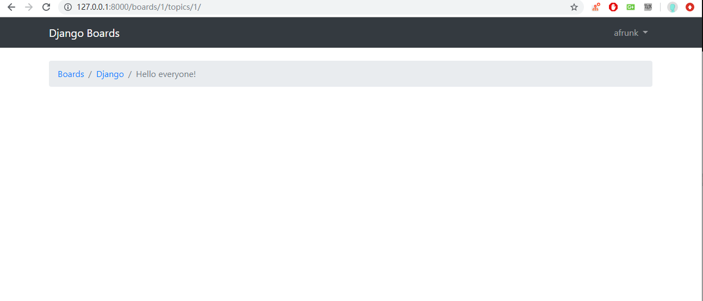
但是我们需要可以通过点击帖子的方法来访问到页面，即在这个页面可以点击帖子，所以我们需要修改 topic.html 的路由跳转
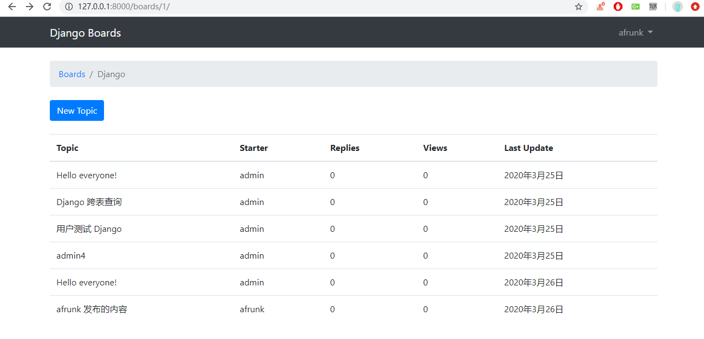
1 2 3 templates/topics.html <td><a href="{% url 'topic_posts' board.id topic.id %}">{{ topic.subject }}</a></td>
展示回复 ok ，现在我们可以很方便的进入到回复的页面，现在就是将所有的回复都展示出来。
1 2 3 4 5 6 7 8 9 10 11 12 13 14 15 16 17 18 19 20 21 22 23 24 25 26 27 28 29 30 31 32 33 34 35 36 37 38 39 40 41 42 43 44 45 46 47 48 templates/topic_posts.html {% extends 'base.html' %} {% load static %} {% block title %}{{ topic.subject }}{% endblock %} {% block breadcrumb %} <li class="breadcrumb-item"><a href="{% url 'home' %}">Boards</a></li> <li class="breadcrumb-item"><a href="{% url 'board_topics2' topic.board.pk %}">{{ topic.board.name }}</a></li> <li class="breadcrumb-item active">{{ topic.subject }}</li> {% endblock %} {% block content %} <div class="mb-4"> <a href="#" class="btn btn-primary" role="button">Reply</a> </div> {% for post in topic.post_set.all %} <div class="card mb-2"> <div class="card-body p-3"> <div class="row"> <div class="col-2"> <img src="{% static 'img/3.png' %}" alt="{{ post.created_by.username }}" class="w-100"> <small>Posts: {{ post.created_by.posts.count }}</small> </div> <div class="col-10"> <div class="row mb-3"> <div class="col-6"> <strong class="text-muted">{{ post.created_by.username }}</strong> </div> <div class="col-6 text-right"> <small class="text-muted">{{ post.created_at }}</small> </div> </div> {{ post.message }} {% if post.created_by == user %} <div class="mt-3"> <a href="#" class="btn btn-primary btn-sm" role="button">Edit</a> </div> {% endif %} </div> </div> </div> </div> {% endfor %} {% endblock %}
这里我们引入了一张图片，我们需要去到 CONFINDER 下载一个用户头像,然后保存在项目的 static/img 目录下。
我们这里来理解下上面的代码。首先，在 Django 2.2 中使用 topic 与 post 的外键反作用需要使用 for post in topic.post_set.all 才能获取到所有 topic 下的 post。然后我们就可以通过 post.created_by.username 访问回复用户名，post.created_at 可以查创建时间，post.message 可以获取回复内容。
另外，在 HTML 文件中我们进行了判断这个 Post 是否是当前用户回复的，如果是才可以进行编辑1 2 3 4 5 {% if post.created_by == user %} <div class="mt-3"> <a href="#" class="btn btn-primary btn-sm" role="button">Edit</a> </div> {% endif %}
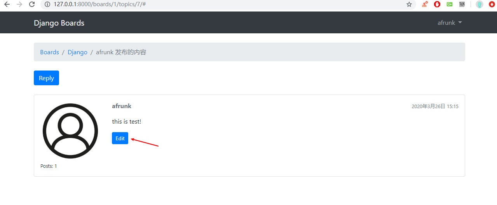
回复功能 现在让我们来实现回复帖子的功能，以便我们可以添加更多的数据和改进功能。
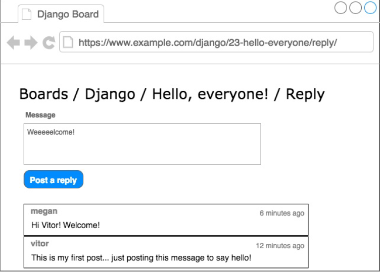
添加新的路由
1 2 3 4 myproject/urls.py # 添加新的回复 path('boards/<int:pk>/topics/<int:topic_pk>/reply/',views.reply_topic,name='reply_topic')
为回帖回复创建一个新的表单
1 2 3 4 5 6 7 8 9 10 11 12 13 14 15 16 17 18 19 20 21 22 23 boards/forms.py from django import forms from .models import Topic,Post class NewTopicForm(forms.ModelForm): message = forms.CharField( widget=forms.Textarea( attrs={'rows':5,'placeholder':'what is on your mind?'} # 输入框内的文本 ),max_length=4000, help_text='The max length of the text is 4000.' # 提示文本 ) class Meta: model = Topic fields =['subject','message'] class PostForm(forms.ModelForm): class Meta: model = Post fields = ['message',]
再来补充 reply_topic 视图
1 2 3 4 5 6 7 8 9 10 11 12 13 14 15 16 17 18 19 20 boards/views.py from .forms import PostForm@login_required def reply_topic (request,pk,topic_pk) : topic = get_object_or_404(Topic,board__pk=pk,pk=topic_pk) if request.method =='POST' : form = PostForm(request.POST) if form.is_valid(): post = form.save(commit=False ) post.topic = topic post.created_by = request.user post.save() return redirect('topic_posts' ,pk=pk,topic_pk=topic_pk) else : form = PostForm() return render(request,'reply_topic.html' ,{'topic' :topic,'form' :form})
然后我们需要修改之前的 New_topic 的跳转地址，修改回 topic 的回复列表页
1 2 3 4 boards/views.py # 重定向 return redirect('topic_posts',pk=pk,topic_pk=topic.pk)
需要注意：在视图函数中 replay_topic 中，我们使用的 topic_pk，因为引用的是函数的关键字参数，而在 new_topic 视图中，我们使用的是 topic.pk ，因为 topic 是一个对象，.pk 是这个实例对象的一个属性，这两种细微的差别，其实区别很大，别搞混了。
1 2 3 4 5 6 7 8 9 10 11 12 13 14 15 16 17 18 19 20 21 22 23 24 25 26 27 28 29 30 31 32 33 34 35 36 37 38 39 40 templates/reply_topic.html {% extends 'base.html' %} {% load static %} {% block title %}Post a reply{% endblock %} {% block breadcrumb %} <li class="breadcrumb-item"><a href="{% url 'home' %}">Boards</a></li> <li class="breadcrumb-item"><a href="{% url 'board_topics2' topic.board.pk %}">{{ topic.board.name }}</a></li> <li class="breadcrumb-item"><a href="{% url 'topic_posts' topic.board.pk topic.pk %}">{{ topic.subject }}</a></li> <li class="breadcrumb-item active">Post a reply</li> {% endblock %} {% block content %} <form method="post" class="mb-4"> {% csrf_token %} {% include 'includes/form.html' %} <button type="submit" class="btn btn-success">Post a reply</button> </form> {% for post in topic.posts.all %} <div class="card mb-2"> <div class="card-body p-3"> <div class="row mb-3"> <div class="col-6"> <strong class="text-muted">{{ post.created_by.username }}</strong> </div> <div class="col-6 text-right"> <small class="text-muted">{{ post.created_at }}</small> </div> </div> {{ post.message }} </div> </div> {% endfor %} {% endblock %}
然后，去修改 replay 按钮的路由，以便跳转到新建回复的页面
1 2 3 4 5 templates/topic_posts.html <div class="mb-4"> <a href="{% url 'reply_topic' topic.pk topic.board.pk%}" class="btn btn-primary" role="button">Reply</a> </div>
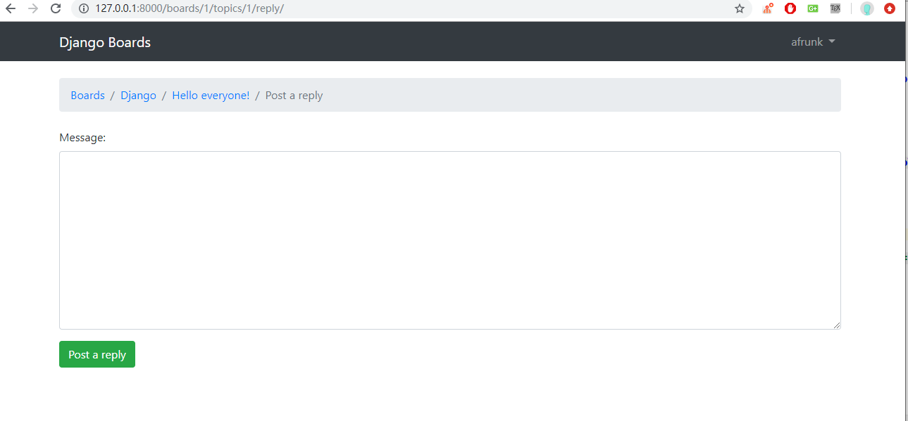
添加之后，我们就可以在列表页看到回复的所有内容了。
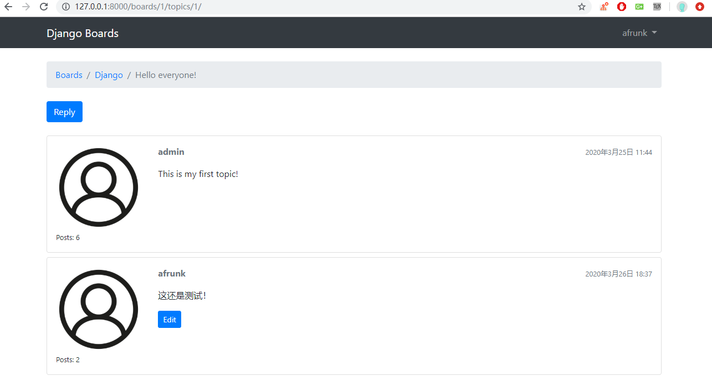
让我们的第一条回复变得与众不同
1 2 3 4 5 6 7 8 9 10 templates/topic_posts.html { <div class="card mb-2 {% if forloop.first %}border-dark{% endif %}"> { {% if forloop.first %} <div class="card-header text-white bg-dark py-2 px-3">{{ topic.subject }}</div> {% endif %}
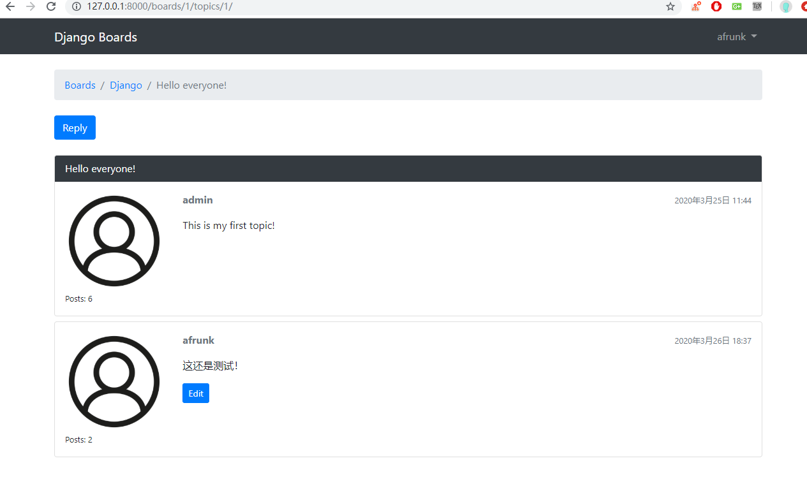
QuerySet 现在我们花点时间来探索关于模型的 API。首先，我们来改进主页
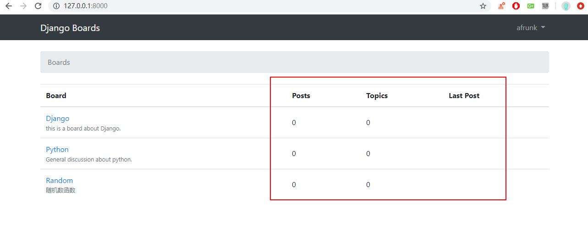
显示每个版块的总主题数
显示每个版块的总回复数
显示每个版块的最后发布者和日期
为了尝试实现这些功能，我们会用到 Python 终端，所以把所有的 models 定义一个 str 方法是个好主意。
1 2 3 4 5 6 7 8 9 10 11 12 13 14 15 16 17 18 19 20 21 22 23 24 boards/models.py from django.db import modelsfrom django.contrib.auth.models import User class Board (models.Model) : def __str__ (self) : return self.name class Topic (models.Model) : def __str__ (self) : return self.subject from django.utils.text import Truncatorclass Post (models.Model) : def __str__ (self) : truncated_message = Truncator(self.message) return truncated_message.chars(30 )
在 Post 模型中，使用了 Truncator 工具类，这是将一个长字符串截取任意长度字符的简便方法（这里我们使用30个字符）
外键查询 现在打开 python shell,最简单的一个就是获取当前版块的总主题数，因为 Topic 和 Board 是直接关联的。
1 2 3 4 5 6 7 8 9 In [2 ]: from boards.models import Board In [3 ]: board = Board.objects.get(name='Django' ) In [4 ]: board.topics.all() Out[4 ]: <QuerySet [<Topic: Hello everyone!>, <Topic: Django 跨表查询>, <Topic: 用户测试 Django>, <Topic: admin4>, <Topic: Hello everyone!>, <Topic: afrunk 发布的内容>]> In [5 ]: board.topics.count() Out[5 ]: 6
跨表无外键查询 要统计一个版块下面的回复数量有点麻烦，因为回复并没有和 Board 进行关联。
1 2 3 4 5 6 7 8 9 10 11 12 13 14 15 16 17 18 19 20 21 22 23 24 25 In [8 ]: from boards.models import Post In [9 ]: Post.objects.all() Out[9 ]: <QuerySet [<Post: This is my first topic! >, <Post: 首先要注意连接外键，这样子虽然不好理解，board.topi>, <Post: This is Test!>, <Post: 这也是系统的一部分>, <Post: 还是测试>, <Post: 1 >, <Post: this is test!>, <Post: 这还是测试！>]> In [10 ]: Post.objects.count() Out[10 ]: 8 In [11 ]: from boards.models import Board,Post In [12 ]: board = Board.objects.get(name='Django' ) In [13 ]: Post.objects.filter(topic__board=board) Out[13 ]: <QuerySet [<Post: This is my first topic! >, <Post: 这还是测试！>, <Post: 首先要注意连接外键，这样子虽然不好理解，board.topi>, <Post: 这也是系统的一部分>, <Post: 还是测试>, <Post: 1 >, <Post: this is test!>]> In [14 ]: Post.objects.filter(topic__board=board).count() Out[14 ]: 7
筛选查询并排序 如何标识版块下面的最后一条回复,通过排序的方法来筛选数据，并输出排序后的第一条数据。1 2 3 4 5 6 7 In [15]: Post.objects.filter(topic__board=board).order_by('-created_at') Out[15]: <QuerySet [<Post: 这还是测试！>, <Post: this is test!>, <Post: 1>, <Post: 还是测试>, <Post: 这也是系统的一部分>, <Post: 首先要注意连接外键，这样子虽然不好理解，board.topi>, <Post: This is my first topic! >]> In [16]: Post.objects.filter(topic__board=board).order_by('-created_at').first() Out[16]: <Post: 这还是测试！>
方法构建和模板调用 1 2 3 4 5 6 7 8 9 10 11 12 13 14 15 16 17 18 19 # 模块 boards/models.py class Board(models.Model): # unique= True 强调数据库级别字段的唯一性 # 必须添加 default 否则会报错告诉你必须添加默认值 name = models.CharField(max_length=30,unique=True,default='test') description = models.CharField(max_length=100) def __str__(self): return self.name # 定义两个方法 稍后在 HTML 模板中进行调用 def get_posts_count(self): # 使用 self 是 class Board 的一个实例方法 return Post.objects.filter(topic__board=self).count() def get_last_post(self): return Post.objects.filter(topic__board=self).order_by('-created_at').first()
这部分的关键在于 HTML 模板的填充。
1 2 3 4 5 6 7 8 9 10 11 12 13 14 15 16 17 18 19 20 21 22 23 24 25 26 27 28 29 30 31 32 33 34 35 36 37 38 39 40 41 42 43 templates/home.html {% extends 'base.html' %} {% block breadcrumb %} <li class="breadcrumb-item active">Boards</li> {% endblock %} {% block content %} <table class="table"> <thead class="thead-inverse"> <tr> <th>Board</th> <th>Posts</th> <th>Topics</th> <th>Last Post</th> </tr> </thead> <tbody> {% for board in boards %} <tr> <td> <a href="{% url 'board_topics2' board.pk %}">{{ board.name }}</a> <small class="text-muted d-block">{{ board.description }}</small> </td> <td class="align-middle">{{ board.get_posts_count }}</td> <td class="align-middle">{{ board.get_last_post }}</td> <td class="align-middle"> {% with post=board.get_last_post %} {% if post %} <small> <a href="{% url 'topic_posts' board.pk post.topic.pk %}"> By {{ post.created_by.username }} at {{ post.created_at }} </a> </small> {% endif %} {% endwith %} </td> </tr> {% endfor %} </tbody> </table> {% endblock %}
我们来看看视图的配置1 2 3 def home(request): boards = Board.objects.all()# 从数据库中读取 board 表内的数据 return render(request,'home.html',{'boards':boards})
首页传给前端模板的 Model 是 Board,我们要所以如果我们要获取 Topic 的内容和跳转链接的话，需要使用如下的语句才能实现。
1 2 3 4 5 6 7 8 9 10 11 12 13 # 通过调用 board 的函数获取排序第一个 post {% with post=board.get_last_post %} # 判断是否有帖子 {% if post %} <small> # 如果有的话进行展示 # 连接 topic_posts 路由 传入两个 pk 值方便跳转 <a href="{% url 'topic_posts' board.pk post.topic.pk %}"> By {{ post.created_by.username }} at {{ post.created_at }} </a> </small> {% endif %} {% endwith %}
效果如下
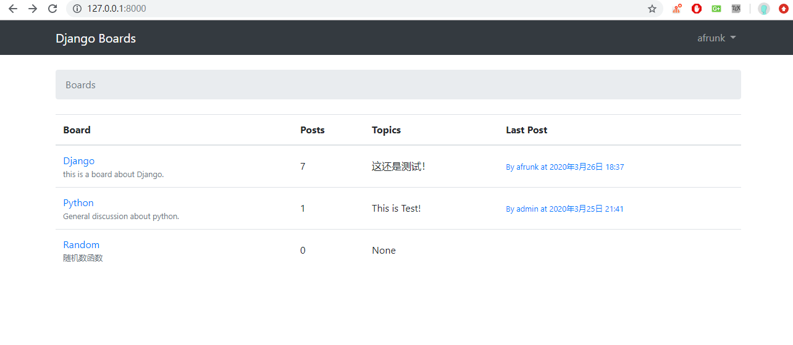
更简单查询 现在，我将告诉你另外一种方法来统计回复的数量，用一种更高效的方式和之前一样，首先在 Python shell 中尝试
这个方法是使用 SQL 的语法来操作数据进行展示，推荐大家直接看原文 吧。
修改主题的查看次数 这样子的话我们就需要添加一个新的字段，进入 boards/models.py 添加一个 views 字段
1 2 3 4 5 6 7 8 9 10 11 class Topic(models.Model): subject = models.CharField(max_length=255) last_updated = models.DateField(auto_now_add=True) # Board 可以通过 related_name 参数用于创建反向关系 # 访问属于该板块下的 Topic 列表 board =models.ForeignKey(Board,related_name='topics',on_delete=models.CASCADE) starter= models.ForeignKey(User,related_name='topics',on_delete=models.CASCADE) views = models.PositiveIntegerField(default =0) #<-here 默认值为0 def __str__(self): return self.subject
我们添加了一个 PositiveIntegerField , 因为这个字段将要存储的是页面的浏览量，不可能是一个负数。在我们可以使用这个新字段前，我们必须更新数据库 schema，执行命令 makemigrations
1 2 3 4 5 6 7 8 9 10 (base) myproject>python manage.py makemigrations Migrations for 'boards': boards\migrations\0003_topic_views.py - Add field views to topic (base) myproject>python manage.py migrate Operations to perform: Apply all migrations: admin, auth, boards, contenttypes, sessions Running migrations: Applying boards.0003_topic_views... OK
配置好字段之后在视图函数中，每请求一次视图函数则浏览量自加1。
1 2 3 4 5 6 7 8 9 10 11 12 13 14 boards/views.py #... from django.shortcuts import render,get_object_or_404,redirect from .models import Board,Topic def topic_posts(request, pk, topic_pk): topic = get_object_or_404(Topic, board__pk=pk, pk=topic_pk) # 尝试使用外键的反方向操作来读取 post 里面的内容 for post in topic.post_set.all(): print(post.message) topic.views +=1 topic.save() return render(request, 'topic_posts.html', {'topic': topic})
在前端 HTML 页面中添加浏览量
1 2 3 4 5 6 7 8 9 10 11 12 13 templates/topics.html <tbody> {% for topic in board.topics.all %} <tr> <td><a href="{% url 'topic_posts' board.id topic.id %}">{{ topic.subject }}</a></td> <td>{{ topic.starter.username }}</td> <td>0</td> <td>{{ topic.views }}</td> <td>{{ topic.last_updated }}</td> </tr> {% endfor %} </tbody>
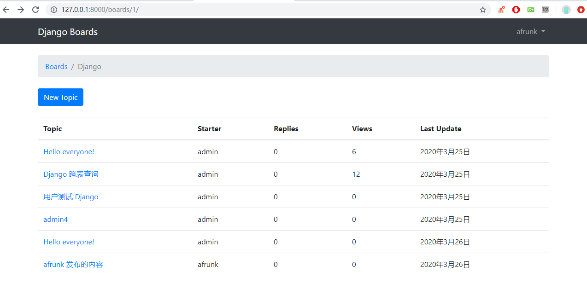
Conclusions 这部分，我们完成了限制未登录用户发言重定向至登录页面、主题回复列表信息展示、回复功能，最关键的是实现了 QuerySet 视图函数编写和前端 HTML 文件的配合。如何使用外键来正向和反向查询，如何跨表构建链接查询。